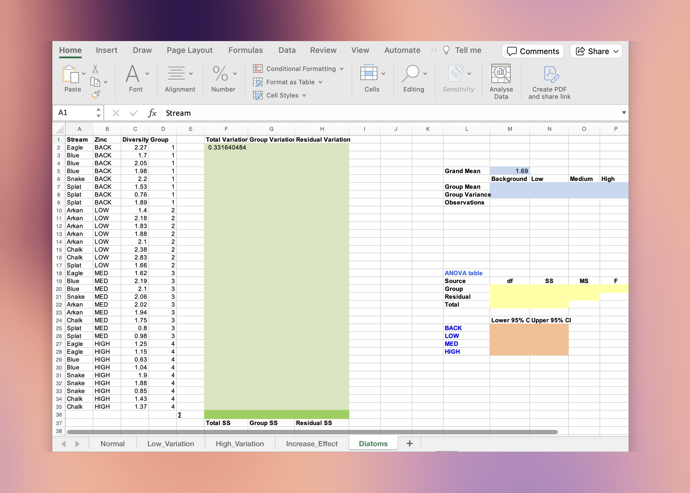
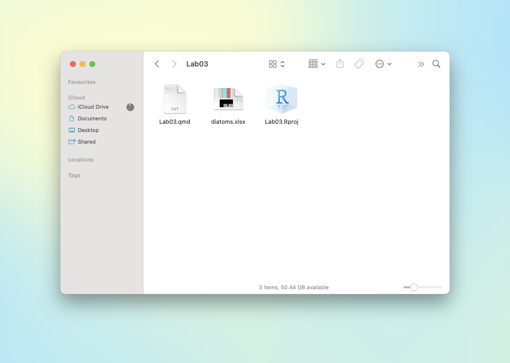
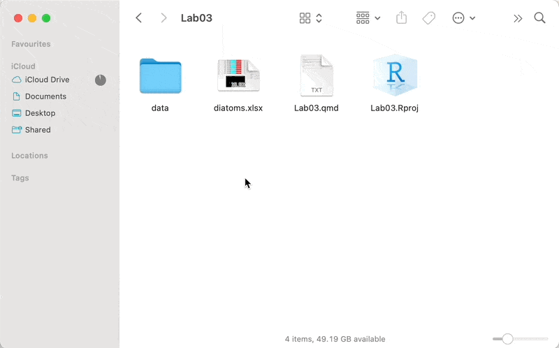

library(readxl)
diatoms <- read_excel("data/diatoms.xlsx",
sheet = "Diatoms",
range = "A1:D35"
)0.1 Welcome
Welcome to Tutorial 03. In this tutorial we will show you how to:
- Import data in various ways into R, focusing on MS Excel files
- Manually calculate a one-way Analysis of Variance (ANOVA)
0.2 Getting started
In some instances you will see notes like this one in the margin, which often contain useful tips or reminders.
- These tutorials are designed to be comprehensive yet accessible. I recommend following along and grasping the statistical concepts as much as you can.
- You will need to create your own Quarto (recommended) or R Markdown document to complete the exercises. In RStudio, go to
File -> New File -> Quarto Document...orFile -> New File -> R Markdown...and follow the intuitive prompts.
- For those of you who are interested in furthering your data science skills and are keen to learn more, I have included optional sections. These techniques are not necessary for you to get through ENVX2001 — we do not cover code in the exams. Nevertheless these skills come handy in report writing and data analysis and can be a great addition to your projects.
- If you have any suggestions for improvement, please let me know! Send me an email (you can find my details on Canvas).
1 Reading MS Excel files
We will work with the diatoms.xlsx file in this section. Download the file from Canvas or your course materials.
1.1 Introduction
Note
Starting this week you will be regularly reading data from both .csv and .xlsx files for your labs and assignments. We have found that many students struggle with this even though they have been taught how to do it in ENVX1002, so we have created this section as a refresher, focusing on the more complex .xlsx file format. If you already know how to import files like a pro, feel free to skip ahead.
Data import in R can be tricky because it involves learning how to work with file paths and working directories. In this section we will import the Diatoms worksheet from the diatoms.xlsx file. This data has been mixed with other information such as exploratory work and calculations, so we will need to specify the range of cells that we are interested in to import the data appropriately.

diatoms.xlsx file.
1.2 Find the working directory
Use getwd() to check the current working directory. This is the location on your computer where R will look for files.
getwd()- If you are working with a document file (like a Quarto or R Markdown file), the working directory is the location of the document file.
- If you are working with a script file (like an R script), the working directory might be different! You can use
setwd()to change the working directory, but this is not recommended1. Instead, use RStudio projects to set the working directory — see Tutorial 1 for more information or check out the documentation from Posit.
1 The setwd() function is not recommended because it is not reproducible: it can cause issues when sharing your code with others, or when working on different computers. Instead, use RStudio projects to set the working directory.
1.3 Move the file
Move diatoms.xlsx to the working directory. This will simplify the file path for data import.

diatoms.xlsx has been placed in the folder that contains an .Rproj file.
Then, use read_excel() from the readxl package to read the file, noting the file path, the worksheet name, and the range of cells that contain the data. Below we have assigned the output to an object called diatoms.
1.4 Moving the file and updating the path
Suppose you want to organise your project files and put all data files in a single folder. You can do this by creating a new folder in the same directory as your Quarto file, and moving the data file(s) into it.
Here, we create a folder called data and move the diatoms.xlsx file into it.

data (but it can be any other name, really), and move your data file(s) to this folder. You will have to update the path to the file in the read_excel() function to read the data from the new location.
We then update the path to the file in the read_excel() function by adding the folder name data/ to the file path.
diatoms <- read_excel(
path = "data/diatoms.xlsx",
sheet = "Diatoms",
range = "A1:D35"
)1.5 Exercises
Here are some quick exercises to see if you can navigate your way around file paths in R.
- Create a new folder called
outputinside thedatafolder and move thediatoms.xlsxfile into it. How will you update thepathin theread_excel()function to reflect this change? - Rename the
outputfolder toraw. - Rename the
datafolder todiatomsand update the code.
2 The ANOVA table
2.1 Introduction
Note
In this section you will use the summary statistics from an experiment to calculate the missing values in the ANOVA table manually.
Importantly, the point of this exercise is to appreciate the ANOVA table and how it is constructed, not so much to do the calculations. For example, you should be able to answer the following questions:
- What does the F-statistic tell us?
- What is the difference between the treatment and residual sum of squares?
- What is total mean squares (MS_{tot}) and what relationship does it have with the variance of the data?
- Can the degrees of freedom tell us whether an experiment is balanced or unbalanced?
In practice, R can perform an ANOVA and generate the table in a split second. Many people tend to ignore much of the table and focus on the p-value, which diminishes the value of all the other information in the table. We hope that by doing this exercise you will appreciate what is arguably one of the most popular statistical tests in the world. It can also help you assess the quality of any publication that uses ANOVA!
ANOVA table calculations and interpretation are both examinable.
2.2 A zombie apocalypse
You and a small community have survived the zombie apocalypse. It is a world with no computers but you have many books and some goats. You have managed to perform an experiment to explore how best to feed your goats. You wish to analyse the data and have to do the ANOVA “by hand” and reconstruct an ANOVA table.
In your maize fodder crop experiment, you tested three planting densities (20, 30, 40 plants/unit area) across 15 similar plots resulting in a total of 5 plots per planting density. The sample means and standard deviations (kg of dry matter/plot) for each planting density are shown below:
| Treatment | Mean | Std.Dev | Variance |
|---|---|---|---|
| 20 plants per unit area | 17.58 | 2.70 | 7.29 |
| 30 plants per unit area | 27.18 | 1.89 | 3.577 |
| 40 plants per unit area | 27.14 | 2.02 | 4.093 |
| Overall | 23.97 | 5.11 | - |
You wish to perform an analysis of variance (ANOVA) to determine if the density of planting influenced the total dry weight of maize for the plot. The ANOVA table comes to mind and is mostly empty; below is what you have so far:
Missing values in the ANOVA table have been labelled a to i for the purpose of this exercise.
| Source | df | sum sq | mean sq | F value |
|---|---|---|---|---|
| Planting_Density | a | d | 152.96 | i |
| Residual | b | e | g | - |
| Total | c | f | h | - |
You want to calculate the missing values in the ANOVA table above given the following:
- You have access to the summary statistics that make up the table.
- Equations from the lectures, which you can use to calculate the missing values. Those equations are also provided in the table below.
- The treatment MS value for
Planting_densityis known at 152.96. - The overall standard deviation is 5.11 for all the data. That is, if we were to pool all the data together, the standard deviation would be 5.11.
- Hint: the total mean sum of squares MS_{tot} is approximately the overall variance of the data.
Tip
The formulas for the ANOVA table are as follows:
| Source | Df | Sum Sq | Mean Sq | F value |
|---|---|---|---|---|
| Treatment | t - 1 | SS_{trt} | MS_{trt} = SS_{trt} / df_{trt} | MS_{trt}/MS_{res} |
| Residual | N - t | SS_{res} | MS_{res} = SS_{res} / df_{res} | |
| Total | N - 1 | SS_{tot} | MS_{tot} = SS_{tot} / df_{tot} |
2.3 Let’s begin!
TipTest your understanding 1
What does the degrees of freedom tell us about the balance of the experiment?
If the sum of the degrees of freedom for the treatment and residual is equal to the total degrees of freedom, then the experiment is balanced. If not, then the experiment is unbalanced i.e. the number of replicates is not the same for each treatment.
TipTest your understanding 2
When you look at the total mean square value, what does it tell you about the “spread” of the data?
The total mean square is the variance of the data as a whole (i.e. not treatment-specific). It tells us how much the data varies from the overall mean. The larger the value, the more spread out the data is.
A large value for MS_{tot} can be due to a large treatment effect or a large residual effect. The F-statistic will help us determine which one it is.
TipTest your understanding 3
What is the difference between the treatment and residual sum of squares?
The treatment sum of squares SS_{trt} is the variation between the treatment means and the overall mean. It tells us how much the treatment means differ from the overall mean.
The residual sum of squares SS_{res} is the variation between the individual observations and their treatment means. It tells us how much the individual observations differ from their treatment means.
By simply looking at the sum of squares, we can tell how much of the variation is due to the treatment and how much is due to the residual. The F-statistic will help us determine which one is more important.
TipTest your understanding 4
Why do we need to calculate mean sums of squares MS if we already have the sum of squares SS?
The mean sum of squares MS is a measure of the variation in the data that is independent of the degrees of freedom i.e. standardised. This makes it easier to compare the variation between different treatments and the residual variation. The resulting F-statistic is therefore also independent of the degrees of freedom.
TipTest your understanding 5
What does the F-statistic tell us?
The F-statistic is a measure of the variation between the treatment means and the residual variation. It tells us how much the treatment means differ from the overall mean relative to how much the individual observations differ from their treatment means. If the F-statistic is large (i.e. greater than 1), then the treatment means differ from the overall mean more than the individual observations differ from their treatment means. This means that the treatment means are significantly different from each other. The F-statistic is used to test the null hypothesis that the treatment means are equal.
2.4 Final ANOVA table
| Source | Df | Sum Sq | Mean Sq | F value |
|---|---|---|---|---|
| Treatment | 2 | 305.92 | 152.96 | 30.78 |
| Residual | 12 | 59.65 | 4.97 | |
| Total | 14 | 365.60 | 26.11 |
2.5 Bonus: doing it in R
In code:
# define known values
N <- 15 # total no. of samples/replicates
t <- 3 # no. of treatments
ms_trt <- 152.96 # treatment MS
sd_overall <- 5.11
df_trt <- t - 1 # a: treatment df
df_residual <- N - t # b: residual df
df_total <- N - 1 # c: total df
ms_total <- sd_overall^2 # h: total Mean Sq
ss_total <- ms_total * df_total # f: total Sum Sq
ss_trt <- ms_trt * df_trt # d: treatment Sum Sq
ss_residual <- ss_total - ss_trt # e: residual Sum Sq
ms_residual <- ss_residual/df_residual # g: residual Mean Sq
f_statistic <- ms_trt/ms_residual # i: F valueIf we fill the table:
knitr::kable(data.frame(
Source = c("Treatment", "Residual", "Total"),
Df = c(df_trt, df_residual, df_total),
`Sum Sq` = round(c(ss_trt, ss_residual, ss_total), 1),
`Mean Sq` = round(c(ms_trt, ms_residual, ms_total), 1),
`F value` = c(round(f_statistic, 1), "", "")
))| Source | Df | Sum.Sq | Mean.Sq | F.value |
|---|---|---|---|---|
| Treatment | 2 | 305.9 | 153.0 | 30.8 |
| Residual | 12 | 59.6 | 5.0 | |
| Total | 14 | 365.6 | 26.1 |
2.6 Do you reject the null hypothesis?
To determine whether we reject the null hypothesis, we need to compare the F-statistic to the Fcritical value. The Fcritical value is the value of F that we would expect to see if the null hypothesis were true. If the F-statistic is greater than the Fcritical value, then we reject the null hypothesis.
To obtain the Fcritical value, we need the degrees of freedom for the treatment and residual and the alpha level (usually 0.05). We then look up the Fcritical value in an F-distribution table or use the qf() function in R.
Use this resource to help you learn more about the qf() function in R.
qf(p = .05, # critical or alpha p value
df1 = 2, # treatment degrees of freedom
df2 = 12, # residual degrees of freedom
lower.tail = FALSE) # use FALSE for probability that F-stat > F_crit[1] 3.885294Since our F-statistic is 30.78, which is higher than the Fcritical value of 3.89, we can say that for our data P < 0.05 and we reject the null hypothesis that the treatment means are equal.
2.7 Which treatment means are different?
To determine which treatment means are different, we can perform a post-hoc test such as Tukey’s HSD test. This test will tell us which treatment means are significantly different from each other.
Since we do not have access to R (in our zombie apocalypse scenario!), we will not be able to perform the Tukey’s HSD test here. But can the original table give us a hint?
knitr::kable(maize)| Treatment | Mean | Std.Dev | Variance |
|---|---|---|---|
| 20 plants per unit area | 17.58 | 2.70 | 7.29 |
| 30 plants per unit area | 27.18 | 1.89 | 3.577 |
| 40 plants per unit area | 27.14 | 2.02 | 4.093 |
| Overall | 23.97 | 5.11 | - |
From the table above we can see that the mean kg of dry matter per plot for the 30 and 40 plants per unit area are very similar. This suggests that the treatment means for 30 and 40 plants per unit area are not significantly different from each other. The treatment mean for 20 plants per unit area is probably significantly different from the other two treatments.
But beware! This is only a hint and not a definitive answer. We need to perform a post-hoc test to be sure. This will be covered in the labs!
3 Done!
Thanks!
This is the end of the tutorial.
If you have any questions or suggestions, let me know during the lectures or via email. You know where to find me!